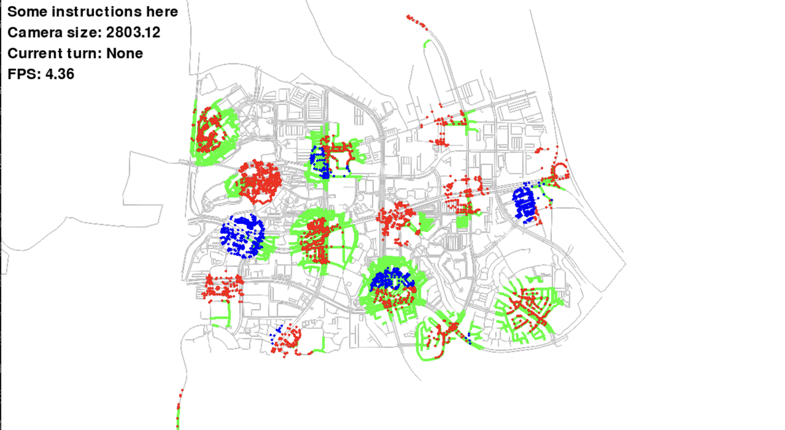

Final Touches & Analysis Tools¶
In the previous tutorial, we have created a complete game with autonomous agents. However, we have not addressed the issue of getting custom information in the agent state that might depend on the scenario. Furthermore, it will be good to store a simulation and replay it without having to do all the calculations again. In this tutorial, we will try to address these issues and explore many of the functionalities of GAMMS that we have not used so far.
Custom Sensors¶
In the scenario that we have constructed, the agents already have information about where the capturable nodes are and what nodes are in the territories of both teams. To make it more realistic, it will be better that the agents can sense this information and make decisions based on how much exploration they have done. We will create two sensors; one for capturable nodes and one for the territory. After that, we will also see how to visualize the outputs from the new sensors in the game.
To create a custom sensor, we need to inherit gamms.typing.ISensor which defines the interface for sensors.
@ctx.sensor.custom(name="CAPTURE")
class CapturableSensor(gamms.typing.ISensor):
def __init__(self, ctx, sensor_id, capturable_nodes, range: float = 160.0):
self.ctx = ctx
self.capturable_nodes = capturable_nodes
self._data = {}
self._sensor_id = sensor_id
self._range = range
self._owner = None
def set_owner(self, owner):
self._owner = owner
@property
def type(self):
return gamms.sensor.SensorType.CUSTOM
@property
def data(self):
return self._data
@property
def sensor_id(self):
return self._sensor_id
def sense(self, node_id):
node = self.ctx.graph.graph.get_node(node_id)
self._data.clear()
for cnode_id in self.capturable_nodes:
capturable_node = self.ctx.graph.graph.get_node(cnode_id)
dist = (node.x - capturable_node.x)**2 + (node.y - capturable_node.y)**2
if dist < self._range**2:
self._data[cnode_id] = dist**0.5
def update(self, data):
return
There are multiple methods that are necessary to be defined for a custom sensor to work. All the 5 methods defined are required methods, and if not defined, GAMMS will throw an error when instantiating the sensor. In addition, we have a decorator @ctx.sensor.custom which registers the sensor with the context. The wrapper does somethings behind the scenes and requires a name parameter. As such, there is a generic type custom for custom sensors, but ideally we would like to distinguish between different custom sensors. One of the things that the decorator does for you is extend the SensorType to have a SensorType.CAPTURE and the type of the capturable sensor will be returned as SensorType.CAPTURE. The sense method is called when the data is to be collected. The update method is something that can be used to create active sensors. We will not worry about the update method for now as our sensor just collects environment data. The set_owner method gets called by the agent when the sensor is registered to it. The agent will pass its name as the argument to the set_owner method. The data property is the data that is collected by the sensor and sensor_id is the unique id of the sensor.
Let us remove the capturable_artist that we created previously and in-place modify the draw_capturable_nodes function to define the visualization for the new sensor. The new function will look like this:
# Capturable nodes artist
def draw_capturable_nodes(ctx, data):
width = data.get('width', 10)
height = data.get('height', 10)
sensor = ctx.sensor.get_sensor(data['sensor'])
color = data.get('color', (0, 0, 0))
if sensor is not None:
return
for node_id in sensor.data:
node = ctx.graph.graph.get_node(node_id)
ctx.visual.render_rectangle(node.x, node.y, width, height, color=color)
The draw_capturable_nodes function now takes an additional parameter sensor which is the sensor sensor_id from which the data can be obtained. We need to create an artist for each copy of CAPTURE sensor we create andd register them to the agents.
# Create capture sensors
for name in red_team:
sensor_id = f"capture_{name}"
sensor = CapturableSensor(ctx, sensor_id, list(blue_start_dict.values()), range=160.0)
ctx.sensor.add_sensor(sensor)
ctx.agent.get_agent(name).register_sensor(sensor_id, sensor)
artist = gamms.visual.Artist(
ctx,
drawer=draw_capturable_nodes,
layer=39,
)
artist.data['sensor'] = sensor.sensor_id
artist.data['width'] = 10.0
artist.data['height'] = 10.0
artist.data['color'] = (0, 0, 255)
ctx.visual.add_artist(sensor_id, artist)
for name in blue_team:
sensor_id = f"capture_{name}"
sensor = CapturableSensor(ctx, sensor_id, list(red_start_dict.values()), range=160.0)
ctx.sensor.add_sensor(sensor)
ctx.agent.get_agent(name).register_sensor(sensor_id, sensor)
artist = gamms.visual.Artist(
ctx,
drawer=draw_capturable_nodes,
layer=39,
)
artist.data['sensor'] = sensor.sensor_id
artist.data['width'] = 10.0
artist.data['height'] = 10.0
artist.data['color'] = (255, 0, 0)
ctx.visual.add_artist(sensor_id, artist)
We are creating the sensors with a range of 160 meters and defining the opposite team as the capturable nodes. The draw_capturable_nodes function will be called by the artist to draw the capturable nodes. The color parameter is set to the color of the opposite team so that the red team will see blue rectangles and the blue team will see red rectangles. Let's remove the artist grouping logic and the turn on/off logic as well. We are calling the ctx.sensor.add_sensor method to keep a reference to the sensor object in the context. The ctx.agent.get_agent(name).register_sensor(sensor_id, sensor) method registers the sensor to the agent.
The ctx.sensor.get_sensor method used in the draw_capturable_nodes function will fail if the sensor is not registered in the context.
Let us now add the territory sensor which will return the territory of both teams in the range of the sensor.
@ctx.sensor.custom(name="TERRITORY")
class TerritorySensor(gamms.typing.ISensor):
def __init__(self, ctx, sensor_id, red_nodes, blue_nodes, range: float = 160.0):
self.ctx = ctx
self.red_nodes = red_nodes
self.blue_nodes = blue_nodes
self._data = {'red': {}, 'blue': {}}
self._sensor_id = sensor_id
self._range = range
self._owner = None
def set_owner(self, owner):
self._owner = owner
@property
def type(self):
return gamms.sensor.SensorType.CUSTOM
@property
def data(self):
return self._data
@property
def sensor_id(self):
return self._sensor_id
def sense(self, node_id):
node = self.ctx.graph.graph.get_node(node_id)
self._data.clear()
self._data['red'] = {}
self._data['blue'] = {}
for cnode_id in self.red_nodes:
territory_node = self.ctx.graph.graph.get_node(cnode_id)
dist = (node.x - territory_node.x)**2 + (node.y - territory_node.y)**2
if dist < self._range**2:
self._data['red'][cnode_id] = dist**0.5
for cnode_id in self.blue_nodes:
territory_node = self.ctx.graph.graph.get_node(cnode_id)
dist = (node.x - territory_node.x)**2 + (node.y - territory_node.y)**2
if dist < self._range**2:
self._data['blue'][cnode_id] = dist**0.5
def update(self, data):
return
Let us also add the visualization for the territory sensor similar to what we did before.
# Territory nodes artist
def draw_territory_nodes(ctx, data):
size = data.get('size', 10)
sensor = ctx.sensor.get_sensor(data['sensor'])
for node_id in sensor.data['red']:
node = ctx.graph.graph.get_node(node_id)
ctx.visual.render_circle(node.x, node.y, size, color=(255, 0, 0))
for node_id in sensor.data['blue']:
node = ctx.graph.graph.get_node(node_id)
ctx.visual.render_circle(node.x, node.y, size, color=(0, 0, 255))
We are drawing circles for the territory nodes. The size parameter is the radius of the circle to be drawn. We will create the sensor and register it to the agents in a similar way as we did for the capturable sensor. After registering the sensors, we will see an overlay of red and blue nodes on the output of the map sensors showing the various territories.
# Create territory sensors
for name in red_team:
sensor_id = f"territory_{name}"
sensor = TerritorySensor(ctx, sensor_id, list(red_territory), list(blue_territory), range=160.0)
ctx.sensor.add_sensor(sensor)
ctx.agent.get_agent(name).register_sensor(sensor_id, sensor)
artist = gamms.visual.Artist(
ctx,
drawer=draw_territory_nodes,
layer=39,
)
artist.data['sensor'] = sensor.sensor_id
artist.data['size'] = 10.0
ctx.visual.add_artist(sensor_id, artist)
for name in blue_team:
sensor_id = f"territory_{name}"
sensor = TerritorySensor(ctx, sensor_id, list(blue_territory), list(red_territory), range=160.0)
ctx.sensor.add_sensor(sensor)
ctx.agent.get_agent(name).register_sensor(sensor_id, sensor)
artist = gamms.visual.Artist(
ctx,
drawer=draw_territory_nodes,
layer=39,
)
artist.data['sensor'] = sensor.sensor_id
artist.data['size'] = 10.0
ctx.visual.add_artist(sensor_id, artist)
 Visualization of territories detected by the territory sensor, displayed as colored circles
Now that we have the input from these sensors, we can remove the hard coded territory and capturable nodes from the agent state. The agent will now be able to figure out the information about the territory and capturable nodes from the sensors. Let's look at the changes to the blue_strategy.py file.
capture_sensor_data = sensor_data[f'capture_{self.name}'][1]
# Get the territory sensor data
territory_sensor_data = sensor_data[f'territory_{self.name}'][1]
for node_id in capture_sensor_data:
capturable_nodes.add(node_id)
for node_id in territory_sensor_data['blue']: # change according to the team
self_territory.add(node_id)
for node_id in territory_sensor_data['red']: # change according to the team
opposite_territory.add(node_id)
The capture_sensor_data and territory_sensor_data variables are the data collected by the sensors. The self_territory and opposite_territory variables are updated with the data from the sensors. The capturable_nodes variable is updated with the data from the capture_sensor_data. We remove the arguments from the mapper function as we are not using them anymore. The mapper function will look like this:
def mapper(agent_names):
ret = {}
for name in agent_names:
team_names.add(name)
agent = Agent(name)
ret[name] = agent.strategy
return ret
We make similar changes to the red_strategy.py file where the only difference is that the self_territory and opposite_territory variables are swapped. We also remove the arguments passed to mapper in game.py.
Final changed files at snippets/custom_sensors
Recording System¶
Until now, we have relied on the visual engine to show us the output of the simulation. But there is quite an overhead in visualizing everything . When we have human input, it makes sense to visualize things but when we have autonomous agents, we can run the simulation without any visualization and then replay the simulation. Furthermore, we need a way to record a simulation to replay it and do analysis on it. GAMMS provides a Recorder which allows you to record a simulation and then replay it. To record a game, we only need to start the recording and there is no need to change anything in the game file. To record a game, we will add the following lines to the game.py file:
The start method takes a path parameter which is the path where the recording will be saved. The recording will be saved to recording.ggr as a binary file. The recorded files differentailly stores the data for each step. In the current version, the following events are recorded by default:
- Agent creation and deletion
- Agent position changes
- When a sensor is registered or deregistered from an agent
- Every time the control is given to the visual engine (Calls to
ctx.visual.simulate()) - When the game is terminated
The recording will only start after the call to ctx.record.start() and will stop when the game is terminated. Anything before will not be recorded. There are also play, pasue and stop methods to control the recording process. The mmethod ctx.record.record() returns a True/False based on whether recording is in progress or not.
To speed up the simulation, we can also turn off the visual engine. To do this, we will switch the visual engine to NO_VIS.
The game will run but as we are not visualizing anything, it is okay to remove all the artists related setups from the game.py file. It will not make any difference in the game speed but it will make the code cleaner and easier to read. Now we can create a file called replay.py which will contain the code to replay the simulation.
import gamms, gamms.osm
import config
ctx = gamms.create_context(
vis_engine=gamms.visual.Engine.PYGAME,
vis_kwargs={'simulation_time_constant': 0.3},
logger_config={'level': 'WARNING'},
) # create a context with PYGAME as the visual engine
G = gamms.osm.graph_from_xml(
config.XML_FILE,
resolution=config.RESOLUTION,
tolerance=config.TOLERANCE,
bidirectional=config.BIDIRECTIONAL
)
ctx.graph.attach_networkx_graph(G) # attach the graph to the context
# Create the graph visualization
graph_artist = ctx.visual.set_graph_visual(**config.graph_vis_config) # set the graph visualization with width 1980 and height 1080
# Create all agents visualization
for name, vis_config in config.agent_vis_config.items():
artist = ctx.visual.set_agent_visual(name, **vis_config)
for _ in ctx.record.replay("recording"):
continue
ctx.terminate() # terminate the context
We are setting up the visualizations for the graph and the agents and then playing the recording. The ctx.record.replay method takes the path to the recording file and returns a generator which yields the events in the recording. We are not doing anything for now but internally the event is yeilded after executing the event. We will look into details of the replay system in the next section. We pass the simulation_time_constant parameter to the visual engine to control the speed of the simulation. Here, we are speeding it up to 0.3 seconds instead of the deafult 2 seconds. The logger level sets the level of logging to WARNING. The recorder will log all events on the deafult INFO level.
Warnings will appear that the sensors are being ignored. This is because no sensors are defined. If the sensors are defined, the data will be populated during replay. Similarly, if a visualization for populated sensor data is defined, it will be drawn during replay.
In the scenario we have created, it will be good if we can keep a track of the team scores and access them while replaying. To do this, we need to create a recorded component.
# Create recorded component
@ctx.record.component(struct={
'step': int,
'max_steps': int,
'red_tag_score': int,
'blue_tag_score': int,
'red_capture_score': int,
'blue_capture_score': int,
}
)
class ReportCard:
def __init__(self):
self.step = 0
self.max_steps = config.MIN_SIM_STEPS
self.red_tag_score = 0
self.blue_tag_score = 0
self.red_capture_score = 0
self.blue_capture_score = 0
report_card = ReportCard(name="report_card")
The ReportCard class is a recorded component which will be used to keep track of the scores. The struct parameter is a dictionary which defines the structure of the component. The step and max_steps parameters are used to keep track of the current step and the maximum number of steps. We have split the scores into tag_score and capture_score for both teams. The ctx.record.component decorator registers the component type with the context. The name parameter is directly added by the decorator and it is required to be passed when creating the component. The name needs to be unique for each component.
The keyword name is reserved and should not be used as a variable in the component. Other internal parameters can be created as a normal object but only the ones mentioned in the struct will be recorded. The type of all the parameters in the struct should be json serializable -- Type definition: JsonType = Union[None, int, str, bool, List["JsonType"], Dict[str, "JsonType"]]
We can replace all the different score variables with a reference to the report_card object and update the scores in the capture_rule and tag_rule functions. We also need to update the counter updates and in the main loop. The step_counter variable is now replaced with report_card.step and the max_steps variable is replaced with report_card.max_steps.
Final changed files at snippets/recording_system
Replay Analysis¶
Under Construction